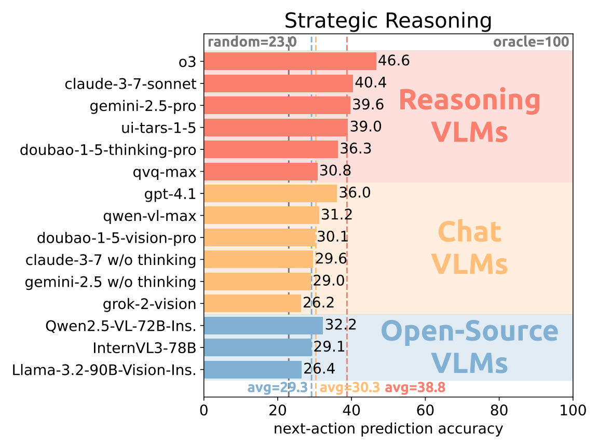
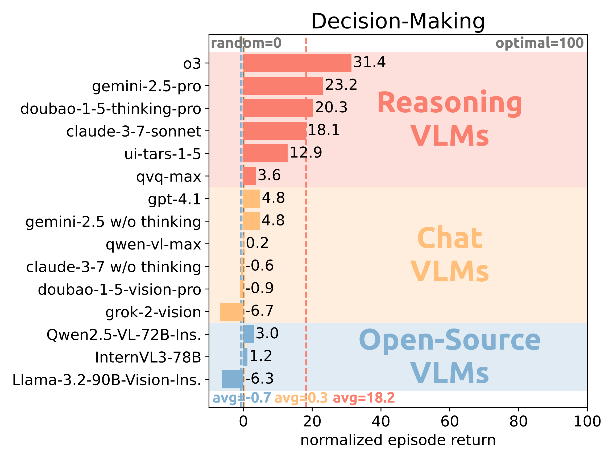
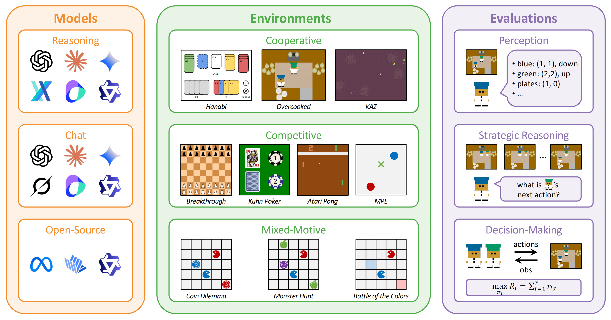
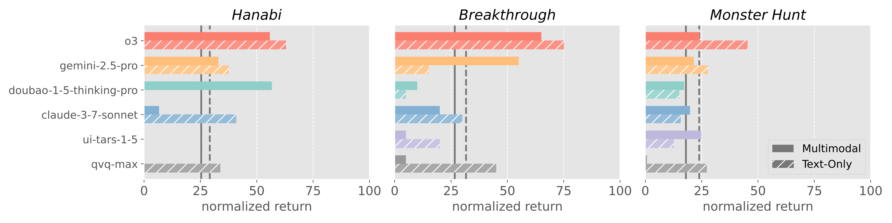
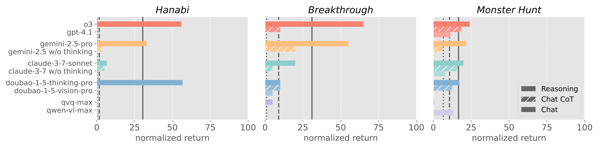
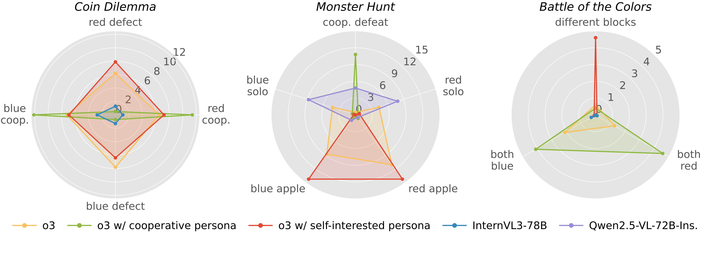
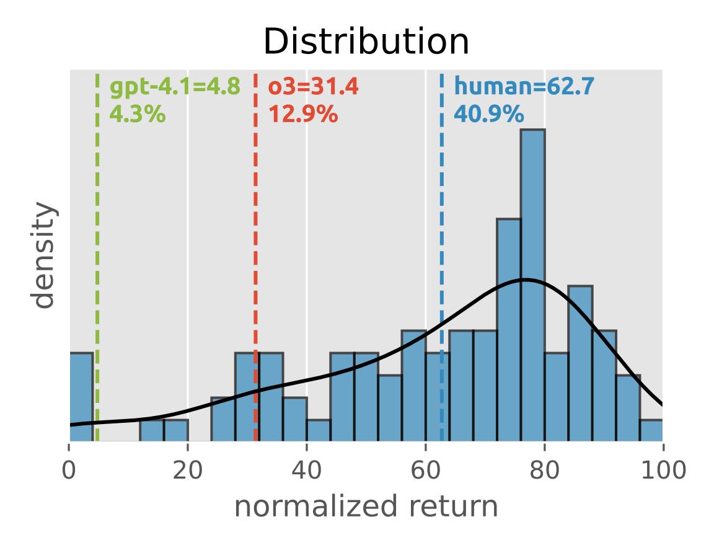

Abstract
Recent advancements in Vision Language Models (VLMs) have expanded their capabilities to interactive agent tasks, yet existing benchmarks remain limited to single-agent or text-only environments. In contrast, real-world scenarios often involve multiple agents interacting within rich visual and textual contexts, posing challenges with both multimodal observations and strategic interactions. To bridge this gap, we introduce Visual Strategic Bench (VS-Bench), a multimodal benchmark that evaluates VLMs for strategic abilities in multi-agent environments. VS-Bench comprises ten vision-grounded environments that cover cooperative, competitive, and mixed-motive interactions. The performance of VLM agents is evaluated across three dimensions: perception measured by element recognition accuracy; strategic reasoning measured by next-action prediction accuracy; and decision-making measured by normalized episode return. Extensive experiments on fifteen leading VLMs show that, although current models exhibit strong perception abilities, there remains a significant gap to optimal performance in reasoning and decision-making, with the best-performing model attaining 46.6% prediction accuracy and 31.4% normalized return. We further analyze the key factors influencing performance, conduct human experiments, and examine failure modes to provide a deeper understanding of VLMs' strategic abilities. By standardizing the evaluation and highlighting the limitations of existing models, we envision VS-Bench as a foundation for future research on strategic multimodal agents.

Figure 1. Evaluation results on strategic reasoning.

Figure 2. Evaluation results on decision-making.
Overview
VS-Bench is a multimodal benchmark for evaluating VLMs in multi-agent environments. We evaluate fifteen models in ten vision-grounded environments across three dimensions, including perception measured by element recognition accuracy, strategic reasoning measured by next-action prediction accuracy, and decision-making measured by normalized episode return.

Figure 3. Overview of VS-Bench, a multimodal benchmark for evaluating VLMs in multi-agent environments.
Contributions
- We introduce VS-Bench, a multimodal benchmark for evaluating VLMs in ten vision-grounded multi-agent environments across cooperative, competitive, and mixed-motive interactions.
- We consider three evaluation dimensions, including perception measured by element recognition accuracy, strategic reasoning measured by next-action prediction accuracy, and decision-making measured by normalized episode returns, to provide a comprehensive assessment of VLM agents.
- We perform extensive experiments of twelve commercial VLMs and three open-source VLMs and provide in-depth analyses of multimodal observation, test-time scaling, social behaviors, human experiments, and failure modes, highlighting significant performance gaps for future research.
Environments
Cooperative Games
Hanabi (Player 0)
Hanabi (Player 1)
Overcooked
KAZ
Competitive Games
Breakthrough
Kuhn Poker
Atari Pong
MPE
Mixed-Motive Games
Coin Dilemma
Monster Hunt
Battle of the Colors
Benchmark Results
Perception
Existing VLMs show competent perception ability.
The evaluation results in Table 1 show that current VLMs achieve high performance in perception of key elements.
All models achieve at least 67.8% overall accuracy and the best model o3 attains 84.9% overall accuracy.
Reasoning models do not show a significant advantage over chat models and open-source models.
These results show that all VLMs demonstrate adequate perception ability for subsequent strategic reasoning and decision-making in multi-agent environment.
| Models | Overall | Cooperative | Competitive | Mixed-Motive | |||||||
|---|---|---|---|---|---|---|---|---|---|---|---|
| Hanabi | Overcooked | KAZ | Board | Poker | Pong | MPE | Dilemma | Hunt | Battle | ||
| Oracle | 100.0 | 100.0 | 100.0 | 100.0 | 100.0 | 100.0 | 100.0 | 100.0 | 100.0 | 100.0 | 100.0 |
| o3 | 84.9 | 79.7 | 69.8 | 90.1 | 97.2 | 99.1 | 64.6 | 97.5 | 85.5 | 80.2 | 85.4 |
| gemini-2.5-pro | 83.4 | 79.9 | 54.5 | 88.6 | 98.5 | 100.0 | 86.5 | 96.5 | 76.4 | 73.0 | 79.9 |
| claude-3-7-sonnet | 81.1 | 73.0 | 62.8 | 92.9 | 75.2 | 99.5 | 69.4 | 89.8 | 82.6 | 79.7 | 85.7 |
| ui-tars-1-5 | 81.5 | 75.4 | 59.8 | 83.0 | 98.0 | 100.0 | 74.4 | 92.2 | 76.0 | 74.9 | 81.0 |
| doubao-1-5-thinking-pro | 74.7 | 42.2 | 52.4 | 77.5 | 91.0 | 98.6 | 66.0 | 87.2 | 76.7 | 74.9 | 80.0 |
| qvq-max | 74.5 | 75.1 | 63.6 | 74.6 | 83.3 | 95.2 | 50.7 | 83.6 | 69.5 | 72.0 | 77.7 |
| gemini-2.5 w/o thinking | 84.5 | 79.9 | 38.8 | 82.8 | 88.2 | 97.2 | 84.3 | 97.3 | 92.5 | 93.1 | 90.8 |
| claude-3-7 w/o thinking | 80.5 | 75.9 | 59.7 | 85.6 | 79.0 | 99.6 | 70.1 | 90.6 | 81.8 | 80.4 | 82.8 |
| gpt-4.1 | 80.3 | 72.1 | 62.0 | 92.6 | 67.0 | 100.0 | 75.4 | 98.9 | 76.7 | 76.8 | 81.2 |
| qwen-vl-max | 80.2 | 76.1 | 68.2 | 85.2 | 81.2 | 99.2 | 69.0 | 88.2 | 78.4 | 76.4 | 80.6 |
| doubao-1-5-vision-pro | 77.6 | 80.0 | 33.1 | 67.8 | 89.3 | 100.0 | 77.7 | 90.8 | 78.0 | 77.6 | 81.2 |
| grok-2-vision | 70.2 | 75.2 | 46.8 | 59.8 | 80.3 | 59.5 | 71.0 | 78.7 | 76.4 | 73.3 | 81.0 |
| Qwen2.5-VL-72B-Ins. | 80.3 | 76.0 | 72.9 | 85.5 | 75.1 | 100.0 | 65.2 | 87.7 | 79.8 | 79.0 | 82.4 |
| InternVL3-78B | 74.1 | 74.6 | 43.6 | 63.8 | 64.3 | 99.2 | 66.7 | 89.2 | 81.1 | 76.7 | 81.8 |
| Llama-3.2-90B-Vision-Ins. | 67.8 | 30.7 | 58.6 | 87.1 | 59.7 | 81.6 | 59.5 | 94.3 | 68.5 | 66.0 | 72.4 |
| Random | 0.0 | 0.0 | 0.0 | 0.0 | 0.0 | 0.0 | 0.0 | 0.0 | 0.0 | 0.0 | 0.0 |
Table 1. Perception evaluation results. For each environment, the first, second, and third best results are highlighted in green.
Strategic Reasoning
Existing VLMs exhibit preliminary strategic reasoning ability but are still far from oracle performance.
The evaluation results in Figure 1 and Table 2 show that current VLMs show basic strategic reasoning ability by surpassing random agents in overall prediction accuracy, yet they still lag behind the oracle results by a noticeable margin.
Most models perform better than random guesses in at least eight of the ten games, demonstrating non-trivial theory-of-mind capability in multi-agent environments.
In general, reasoning models achieve better results than chat models and open-source models, with the best-performing model o3 attaining an overall accuracy of 46.6% and ranking first in six environments.
Notably, the three leading open-source models achieve an average overall accuracy of 29.2%, which is comparable to commercial chat models with a 30.3% average overall accuracy.
However, even these most capable models attain less than 50% overall accuracy, and some even fail to outperform random.
This deficit is especially pronounced in Overcooked, Atari Pong, and Monster Hunt, which are all adapted from video games.
| Models | Overall | Cooperative | Competitive | Mixed-Motive | |||||||
|---|---|---|---|---|---|---|---|---|---|---|---|
| Hanabi | Overcooked | KAZ | Board | Poker | Pong | MPE | Dilemma | Hunt | Battle | ||
| Oracle | 100.0 | 100.0 | 100.0 | 100.0 | 100.0 | 100.0 | 100.0 | 100.0 | 100.0 | 100.0 | 100.0 |
| o3 | 46.6 | 61.2 | 40.5 | 30.8 | 29.0 | 67.0 | 25.8 | 33.8 | 59.2 | 57.5 | 61.5 |
| claude-3-7-sonnet | 40.4 | 39.0 | 26.0 | 29.0 | 24.2 | 65.2 | 44.8 | 35.8 | 53.8 | 42.5 | 43.2 |
| gemini-2.5-pro | 39.6 | 51.2 | 22.0 | 28.8 | 26.8 | 59.8 | 24.5 | 35.0 | 52.5 | 35.8 | 60.0 |
| ui-tars-1-5 | 39.0 | 25.5 | 18.2 | 38.5 | 23.2 | 65.8 | 30.8 | 33.5 | 63.0 | 41.5 | 50.0 |
| doubao-1-5-thinking-pro | 36.3 | 32.8 | 26.2 | 27.5 | 19.8 | 65.8 | 44.2 | 34.8 | 26.5 | 45.2 | 40.0 |
| qvq-max | 30.8 | 32.2 | 19.0 | 24.5 | 21.8 | 63.0 | 37.8 | 35.5 | 25.2 | 21.5 | 27.0 |
| gpt-4.1 | 36.0 | 23.0 | 27.0 | 27.8 | 22.5 | 58.2 | 41.5 | 35.8 | 49.8 | 36.8 | 38.0 |
| qwen-vl-max | 31.2 | 26.5 | 26.0 | 46.0 | 19.5 | 52.2 | 23.5 | 31.0 | 26.2 | 23.5 | 37.2 |
| doubao-1-5-vision-pro | 30.1 | 15.0 | 22.2 | 18.5 | 15.8 | 58.2 | 31.2 | 31.5 | 37.2 | 36.0 | 34.8 |
| claude-3-7 w/o thinking | 29.6 | 9.8 | 16.0 | 35.8 | 18.0 | 57.2 | 43.2 | 32.2 | 31.0 | 26.0 | 26.8 |
| gemini-2.5 w/o thinking | 29.0 | 21.5 | 19.2 | 20.8 | 14.8 | 56.5 | 34.0 | 27.0 | 31.8 | 30.5 | 33.8 |
| grok-2-vision | 26.2 | 12.8 | 17.2 | 25.5 | 10.8 | 59.5 | 20.8 | 25.2 | 30.2 | 31.5 | 29.0 |
| Qwen2.5-VL-72B-Ins. | 32.2 | 26.8 | 26.5 | 39.5 | 23.8 | 50.8 | 27.0 | 34.2 | 30.0 | 27.2 | 36.8 |
| InternVL3-78B | 29.1 | 25.2 | 20.5 | 24.0 | 14.0 | 45.2 | 34.8 | 30.2 | 37.0 | 30.0 | 30.2 |
| Llama-3.2-90B-Vision-Ins. | 26.4 | 20.0 | 16.5 | 20.8 | 11.8 | 52.8 | 36.2 | 32.8 | 22.2 | 26.2 | 25.0 |
| Random | 23.0 | 8.8 | 16.7 | 16.2 | 4.2 | 50.0 | 33.3 | 19.5 | 25.4 | 29.3 | 26.5 |
Table 2. Strategic reasoning evaluation results. For each environment, the first, second, and third best results are highlighted in green, while the results below random are highlighted in red.
Decision-Making
Existing VLMs struggle with decision-making in multi-agent environments.
The evaluation results in Figure 2 and Table 3 show that current VLMs have limited decision-making ability in multi-agent environments, highlighting a significant gap between existing models and oracle performance.
As illustrated by the large swaths of red cells, four out of fifteen models' overall performance is even worse than random agents, indicating their incompetence to optimize long-term return under non-stationary, interdependent multi-agent dynamics.
Although reasoning models achieve relatively better results than chat models and open-source models, even the best-performing model o3 only attains an overall normalized return of 31.4%, which is far behind the oracle agent.
Surprisingly, we observe that some open-source models can achieve comparable results to reasoning models in certain mixed-motive games like InternVL3-78B in Coin Dilemma and Qwen2.5-VL-72B-Ins. in Monster Hunt.
We also observe that the failures to outperform random agents are concentrated on video games like Overcooked, KAZ, Atari Pong, and Coin Dilemma, which underscores the coupled difficulty of multimodal perception and strategic decision-making.
| Models | Overall | Cooperative | Competitive | Mixed-Motive | |||||||
|---|---|---|---|---|---|---|---|---|---|---|---|
| Hanabi | Overcooked | KAZ | Board | Poker | Pong | MPE | Dilemma | Hunt | Battle | ||
| Oracle | 100.0 | 100.0 | 100.0 | 100.0 | 100.0 | 100.0 | 100.0 | 100.0 | 100.0 | 100.0 | 100.0 |
| o3 | 31.4 | 55.8 | 15.6 | 29.5 | 65.0 | 61.8 | 8.6 | 37.2 | -0.4 | 24.0 | 16.7 |
| gemini-2.5-pro | 23.2 | 32.9 | 17.1 | 8.4 | 55.0 | 27.3 | 6.5 | 38.9 | -9.6 | 21.5 | 33.8 |
| doubao-1-5-thinking-pro | 20.3 | 56.7 | 10.1 | 14.1 | 10.0 | 48.5 | 2.9 | 38.5 | 0.7 | 17.2 | 4.0 |
| claude-3-7-sonnet | 18.1 | 6.7 | 10.1 | 5.3 | 20.0 | 72.9 | -0.5 | 39.4 | 4.6 | 19.9 | 2.5 |
| ui-tars-1-5 | 12.9 | 0.0 | 2.0 | -4.7 | 5.0 | 36.4 | -0.9 | 19.4 | 33.1 | 24.9 | 13.6 |
| qvq-max | 3.6 | 0.0 | 2.0 | -1.7 | 5.0 | -8.7 | 0.4 | 38.6 | 0.0 | 0.7 | -0.5 |
| gpt-4.1 | 4.8 | 0.0 | -0.5 | -5.3 | 0.0 | -7.1 | 0.2 | 31.5 | 17.8 | 11.2 | 0.5 |
| gemini-2.5 w/o thinking | 4.8 | 0.0 | 2.0 | 0.0 | 0.0 | 18.2 | 1.0 | 23.8 | -0.7 | 0.7 | 2.5 |
| qwen-vl-max | 0.2 | 1.2 | -0.5 | -5.3 | 0.0 | -20.5 | -0.3 | 14.4 | -0.4 | 13.2 | -0.5 |
| claude-3-7 w/o thinking | -0.6 | 0.0 | 2.0 | 3.5 | 5.0 | -23.6 | -0.9 | 5.6 | 1.4 | 0.2 | 1.0 |
| doubao-1-5-vision-pro | -0.9 | 0.0 | -0.5 | -5.3 | 0.0 | -40.2 | -0.9 | 32.9 | -2.1 | 7.8 | -0.5 |
| grok-2-vision | -6.7 | 0.0 | 1.5 | 0.0 | 0.0 | -11.8 | -0.1 | -58.2 | 1.1 | -0.4 | 0.5 |
| Qwen2.5-VL-72B-Ins. | 3.0 | 0.8 | -0.5 | -5.3 | 0.0 | -3.1 | -0.8 | 19.6 | 0.0 | 19.6 | -0.5 |
| InternVL3-78B | 1.2 | 0.0 | 0.0 | -3.5 | 0.0 | 4.0 | -0.9 | 5.9 | 5.0 | -0.2 | 1.5 |
| Llama-3.2-90B-Vision-Ins. | -6.3 | 0.0 | 1.5 | 0.0 | 0.0 | -39.4 | -0.9 | -29.6 | 0.4 | 3.6 | 1.0 |
| Random | 0.0 | 0.0 | 0.0 | 0.0 | 0.0 | 0.0 | 0.0 | 0.0 | 0.0 | 0.0 | 0.0 |
Table 3. Decision-making evaluation results. For each environment, the first, second, and third best results are highlighted in green, while the results below or equal to random are highlighted in red.
Analysis
Multimodal Observations
Although VLMs achieve good performance in multimodal perception, the evaluations on reasoning and decision-making show that environments with rich visual observations are especially challenging for VLM agents. To investigate the influence of multimodal observations, we further evaluate VLMs with text-only observations that replace images with corresponding text descriptions. We select a board game, a card game, and a video game, and evaluate reasoning VLMs for decision-making with multimodal and text-only observations. The decision-making results of reasoning models in Figure 4 show that VLMs achieve slightly better results with text-only observations, but are still far from oracle results. This indicates that the weak decision-making performance arises from the coupled challenges of multimodal observation and strategic interactions in multi-agent environments.

Figure 4. Comparison of reasoning VLMs on decision-making with multimodal and text-only observations. The solid and dashed vertical lines represent the average results of two settings.
Test-Time Scaling
We observe in the evaluation results that reasoning models generally achieve better performance than chat models. We further investigate the test-time scaling of VLMs in multi-agent environments by using Chain-of-Thought (CoT) prompting for chat models and comparing their performance with reasoning models and chat models with simple IO prompting. The evaluation results in Figure 5 show that CoT prompting significantly improves chat models' performance in all three environments, while reasoning models still achieve the best results. This demonstrates that test-time scaling like reasoning and CoT prompting can substantially improve VLMs' performance.

Figure 5. Comparison of reasoning VLMs and chat VLMs on decision-making with IO and CoT prompting. The solid, dashed, and dotted vertical lines represent the average results of three settings.
Social Behaviors
Another interesting observation in the evaluation results is that open-source models can achieve comparable results to reasoning models in some mixed-motive games.
We investigate this by visualizing the behaviors of o3 and the best-performing open-source models in each social dilemma game.
As shown in Figure 6, in Coin Dilemma, o3 is better at collecting coins but also more self-interested, while InternVL3-78B is more inclined to cooperation that leads to a win-win situation.
Similar behaviors can be found in Monster Hunt, where the two reasoning models tend to safely eat apples alone, while Qwen2.5-VL-72B-Ins. prefers taking the risk to cooperate and defeat the monster together.
We also explicitly prompt o3 with self-interested and cooperative personas, and find that different personas significantly change the behaviors and performance of VLMs.

Figure 6. Social behaviors of o3 with different personas and the best-performing open-source model in each social dilemma game.
Human Experiments
We further conduct human experiments in all ten games to better understand the current capability of VLMs in multi-agent environments.
To ensure a fair comparison, we let human participants receive the same observations and play games for the same number of times as the VLMs.
As shown in Figure 7, human participants achieve an average overall normalized return of 62.7.
For comparison, o3 attains an overall return of 31.4, which surpasses 12.9% of human results; gpt-4.1 attains an overall return of 4.4, which surpasses only 4.3% of human results.

Figure 7. Human experiment results.
Failure Examples
To understand why VLMs underperform in multi-agent environments, we conduct a qualitative analysis of their failure cases. In strategic reasoning, two common failure cases are ignoring history and private information. For example, in Hanabi, players' cards are observable to other agents but not to themselves. VLMs often overlook this information asymmetry and incorrectly use their private information to predict the next actions of others. In decision-making, another common failure case is focusing excessively on one's own actions while ignoring those of others. For example, in Breakthrough, VLMs tend to persistently advance their own pieces and fail to identify defensive vulnerabilities that directly result in losing the match.
BibTeX
@article{xu2025vs,
title={VS-Bench: Evaluating VLMs for Strategic Abilities in Multi-Agent Environments},
author={Xu, Zelai and Xu, Zhexuan and Yi, Xiangmin and Yuan, Huining and Guang, Mo and Long, Kaiwen and Chen, Xinlei and Wu, Yi and Yu, Chao and Wang, Yu},
journal={arXiv preprint arXiv:2506.02387},
year={2025}
}